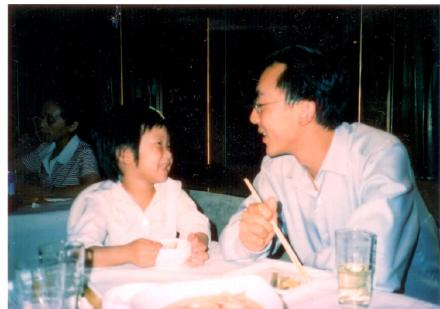

尚武精神
爸爸觉得曼曼胆小，总想培养她的尚武精神。有一天给她做了一个金箍棒，教了她半天功夫，威风凛凛的命令她：“去，给妈妈一顿好打！”。曼曼跑到妈妈面前，突然背过身去，撅起小屁股，扭着说：“打吧打吧，我才不怕呢”。妈妈忍不住哈哈大笑，再看爸爸，当场差点背过气去。
臭美
曼曼有很强的性别意识，有时候我觉得她挺臭美的。夏天她穿着裙子趴在床上玩，突然站起来，抻了抻裙子说：“我不能再趴在床上玩了，我的裙子都会弄皱的”。
曼曼上幼儿园的跳舞班，上完告诉我她很累。我说，你要是不喜欢我们可以不上。她想了想，说还是想上，因为跳舞很漂亮。

曼曼出生前半个月，姑父就到美国去留学了，他们第一次见面的时候，曼曼已经快4岁了。但是，曼曼和姑父一见如故，亲的不得了，因为姑父不能住在我们家还发了好一阵脾气。
姥姥在电话里呢
曼曼给姥姥打电话，天气很热，她突然拿起一把小扇子，对着话筒使劲扇起来，一会儿还对着话筒问：“姥姥，你凉快吗？”我笑着说：“你哪能给姥姥扇呀？”她说：“可以的，姥姥在电话里呢！”
验血
曼曼的幼儿园今天体检，要验血。离开家之前，曼曼一直对我说：“要扎手指头，很疼的，我要哭一下就不哭了”。回来以后，她很骄傲的告诉我们她一下都没有哭。我说：“你不是想哭一下吗？”她回答：“爸爸告诉我，如果我哭，他还是喜欢我，如果我没哭，他就会更喜欢我了。爸爸不要我哭我就不哭。”嘿，把她爸哄得屁颠屁颠的。
唐僧
曼曼晚上看电视的时候突然告诉我：“你知道唐僧为什么戴帽子吗？因为他是个光头，实在太难看了，所以他只好戴帽子把头遮起来，要不然别人都会笑话他的，太丢人了！”
性别意识
曼曼渐渐的有了性别意识。一天，她对妈妈说：“妈妈，你是女人，我也是女人”。妈妈说：“你太小了，你是小女孩”。她想了想，突然很严肃的回答：“可是妈妈，我的头发已经被剪掉了”。在她小小的心里，一定在担心头发被剪掉以后，她就不再是个小女孩了。